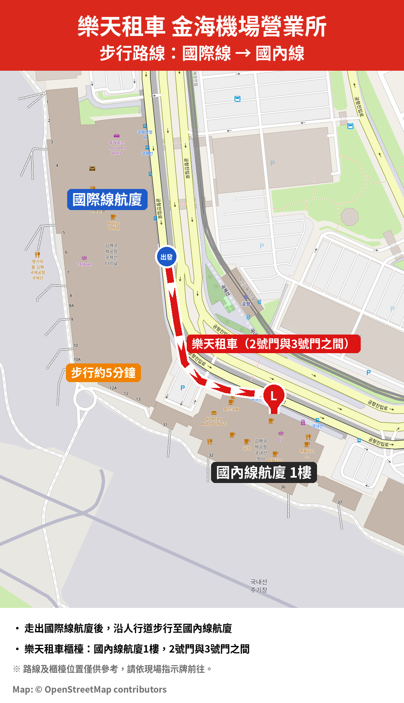

金海機場取車指南
金海機場營業所 · 租車前須知

1取車地點
國內線航廈1樓（抵達大廳）
櫃檯位於2號門與3號門之間。
從國際線航廈步行約5分鐘。
2所需證件（須攜帶正本）
- 護照 – 用於身分確認
- 有效的國際駕照（IDP） – 請確認有效期限及准駕車種：
- B類：除駕駛座外，座位不超過8個的車輛
- D類：除駕駛座外，座位超過8個的車輛
3抵達前
請回覆此電子郵件，告知您的抵達航班編號（例：KE1234）。
⚡ 快速取車服務
事先寄送護照與國際駕照掃描檔，即可快速便利地取車！
諮詢：金海機場營業所
✉️ 534046@lotte.net
💬 線上聊天諮詢服務時間 08:00–21:00（韓國時間）